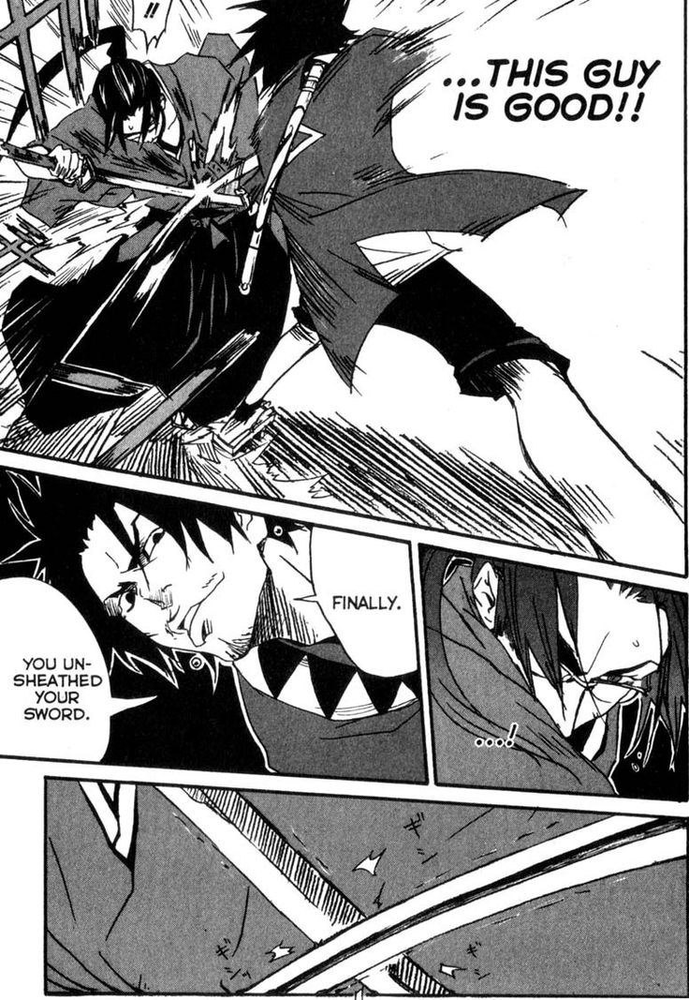

Samurai Champloo
by Masaru Gotsubo
Synopsis
Set in an alternate version of Japan's Edo period, Samurai Champloo follows Fuu, a young woman searching for a mysterious samurai who smells of sunflowers. She recruits Mugen, a wild and unpredictable swordsman, and Jin, a calm and disciplined ronin, to help her on her journey. Despite their clashing personalities and fighting styles, the three travel together through a world of samurai, outlaws, and unexpected encounters.
Chapter 1

Fuu's ordinary life takes a sudden turn when she encounters two dangerous swordsmen, Mugen and Jin. After their paths cross in a chaotic confrontation, the unlikely trio finds themselves connected by circumstances neither swordsman could have expected.
With Fuu determined to find the samurai who smells of sunflowers, she asks Mugen and Jin to accompany her. Their journey begins despite their constant disagreements, bringing together sharp swordplay, humor, and a distinctive blend of historical adventure and hip-hop-inspired style.
— End of chapter —